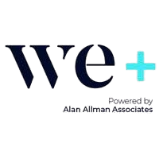

54
Candidates in pool
11
Open vacancies
8
Role categories
2
Urgent placements
Candidate pool by role
Vacancy overview by category
Top Candidates
Ranked by match score — skill · experience · industry

TalentMatch